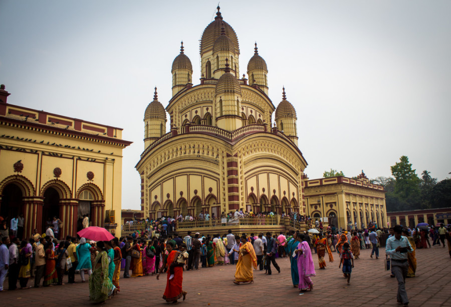
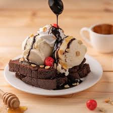

Dakshineswar Temple
Kolkata is home to some fascinating temples. It feels apt that the deity of Kolkata is the ferocious Kali! – a fearsome goddess with the gruesome heads of her victims strung around her neck. The frenzied worship of Kali here was a sight to behold as the lines snaked for hours around the most popular temples at Dakshineswar and Kali Ghat. I’m just glad that I missed the goat sacrifice in the mornings at Kali Ghat – that would have been too much for me!
Dakshineswar Temple is not only architecturally beautiful but also holds immense spiritual significance. The temple was once home to the renowned mystic Sri Ramakrishna Paramahamsa, who served as a priest here and gained spiritual enlightenment. His teachings and philosophies have greatly influenced Hindu thought, and his association with the temple makes it an essential pilgrimage site.
Fudge Cake: Bengaluru's Beloved Dessert
-

- Brief history and origin, with a note on its evolution in the U.S. as a denser chocolate dessert.
- Mention any unique variations or regional twists if applicable.
- Dense Texture: Explain the science behind fudge cake’s density—often due to a higher fat content.
- Flavor Boosts: Share how ingredients like espresso or coffee enhance the chocolate.
- Classic Ice Cream Pairing: Mention the warm-cold combo of fudge cake with vanilla or salted caramel ice cream.
- Berry Brightness: Discuss how fresh berries provide a tart contrast to the cake’s sweetness.
- Gourmet Topping:Suggest whipped cream, nuts, and mint as complementry texture and flavors.
The origins of Fudge Cake
Interesting Facts About Fudge Cake
Serving Tip
About me
Myself Ankit Singh, I completed my B.Tech in Computer Science from Dr.A.P.J Abdul Kalam Univercity Lucknow. Although I am good at web technologies,I am currently pursuing Full Stack Developement course through Internshala.